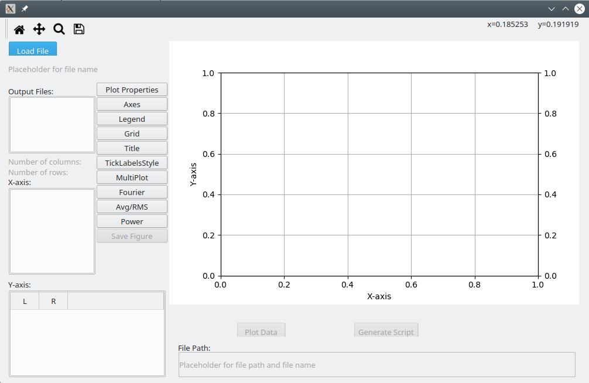

Getting Started¶
It is assumed that you have successfully installed GSEIM on a linux computer. In this section, you will see how to run an existing project (which is already available in the GSEIM distribution).
We consider free acceleration of an induction motor
(project file m_indmc.grc) and demonstrate how to load this project,
run the simulation, and view the results.
File menu \(\rightarrow\) Open \(\rightarrow\) Select the project file
~/gseim_gui/proj_grc/m_indmc.grcas shown below.The project schematic diagram will appear as shown below.
Click on
Generate flow graph. This would create the circuit file~/gseim_gui/gseim/output/m_indmc.inwhich is used by the GSEIM solver for solving the set of ODEs associated with the project schematic. Notice that a separate window opens to show the progress of this step. If the flow graph generation is successful, Program Completed will appear at the bottom of that window.Click on
Execute flow graph. This invokes the solver which runs the simulation and creates the data files as specified for this project. Again, a separate window opens to show the progress made by the solver. The data files are created in the directory~/gseim_gui/gseim/output.Click on
View results. The plotting GUI would show up as a separate application, as shown below.Click on
Browse files, and select the circuit file~/gseim_gui/gseim/output/m_indmc.in. The data file created by GSEIM for this particular project will appear as shown below. Names of the variables stored in the data file are listed. Selecttimeas x-axis andwrm(the angular speed of the motor) as the y-axis to obtain the plot shown below.
{kind=link}
{kind=link}
{kind=link}
{kind=link}